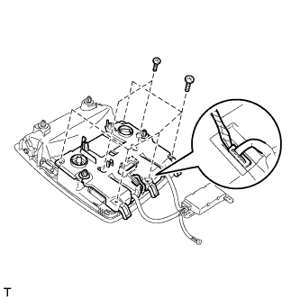
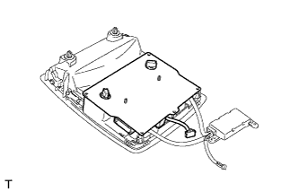
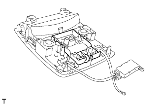
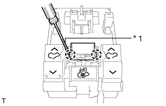

УСИЛИТЕЛЬ МИКРОФОНА > СНЯТИЕ |
| 1. СНИМИТЕ ЛАМПУ ИНДИВИДУАЛЬНОГО ОСВЕЩЕНИЯ |
 |
Освободите 4 фиксатора.
Отсоедините разъем и снимите лампу индивидуального освещения.
| 2. СНИМИТЕ ДАТЧИК РАДАРА ПРОТИВОУГОННОЙ СИСТЕМЫ |
 |
Удалите всю ленту и выверните 2 винта.
Освободите зажим и отсоедините среднюю часть датчика радара противоугонной системы.
Отсоедините разъем.
| 3. СНИМИТЕ МИКРОФОН ТЕЛЕФОНА В СБОРЕ |
|  |
С помощью отвертки с тонким лезвием отсоедините разъем.
Выверните 7 винтов и снимите крышку.
|  |
Снимите печатную плату.
|  |
Снимите держатель.
|  |
С помощью отвертки с тонким лезвием освободите 2 захвата и снимите микрофон.
| *1 | Защитная клейкая лента |